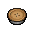
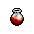
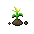
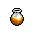

")
Magic - The Lunar spells
Introduction
Only the most powerful of mages that have proven themselves in the Lunar Diplomacy quest may have access to this spellbook. To change between normal and lunar spells, you must travel to Lunar Isle and pray at the astral rune altar.
Heals and cures
| Spell | Level required | Runes required | Experience | |||||||
![[image]](../../img/main/kbase/skills/magic/spells/cure_other1.gif) Cure other |
68 |
![[image]](../../img/main/kbase/items/runes/astral_rune.gif) Astral rune |
x 1 | ![[image]](../../img/main/kbase/items/runes/lrune.gif) Law rune |
x 1 | ![[image]](../../img/main/kbase/items/runes/erune.gif) Earth rune |
x 10 | 65 | ||
| Effect: When cast on another player, this spell will cure them if they are suffering the effects of any poison. |
||||||||||
![[image]](../../img/main/kbase/skills/magic/spells/cure_me1.gif) Cure me |
71 |
Astral rune |
x 2 | Law rune |
x 1 | ![[image]](../../img/main/kbase/items/runes/crune.gif) Cosmic rune |
x 2 | 69 | ||
| Effect: If you are suffering the effects of any poison, you can cast this and cure yourself of it. |
||||||||||
![[image]](../../img/main/kbase/skills/magic/spells/cure_group1.gif) Cure group |
74 |
Astral rune |
x 2 | Law rune |
x 2 | Cosmic rune |
x 2 | 74 | ||
| Effect: When cast, this will cure anyone who is poisoned in the area surrounding you. |
||||||||||
![[image]](../../img/main/kbase/skills/magic/spells/heal_other1.gif) Heal other |
92 |
Astral rune |
x 3 | Law rune |
x 3 | ![[image]](../../img/main/kbase/items/runes/blrune.gif) Blood rune |
x 1 | 101 | ||
| Effect: When cast, this will transfer some of your life points to your target if they have lowered life points. |
||||||||||
![[image]](../../img/main/kbase/skills/magic/spells/heal_group1.gif) Heal group |
95 |
Astral rune |
x 4 | Law rune |
x 6 | Blood rune |
x 3 | 124 | ||
| Effect: When cast, this will transfer your life points to heal anyone who has lowered life points in the area surrounding you. |
||||||||||
Support and skill related spells
| Spell | Level required |
Runes required | Experience | |||||||
|  Bake pie |
65 |
Astral rune |
x 1 | ![[image]](../../img/main/kbase/items/runes/frune.gif) Fire rune |
x 5 | ![[image]](../../img/main/kbase/items/runes/wrune.gif) Water rune |
x 4 | 60 + relevant Cooking xp |
||
| Effect: When cast, this spell will cook any unbaked pies in your inventory. |
||||||||||
![[image]](../../img/main/kbase/skills/magic/spells/cure_plant1.gif) Cure plant |
66 |
Astral rune |
x 1 | Earth rune |
x 8 | 60 | ||||
| Effect: When cast, this spell will cure the target Farming patch of disease. |
||||||||||
![[image]](../../img/main/kbase/skills/magic/spells/monster_examine1.gif) Monster examine |
66 |
Astral rune |
x 1 | Cosmic rune |
x 1 | ![[image]](../../img/main/kbase/items/runes/mrune.gif) Mind rune |
x 1 | 61 | ||
| Effect: Must have completed Dream Mentor. Can be used on any combat monster in the game. When cast, it will tell you the monster's life points, maximum hit, and whether they are immune to poison and/or a Slayer monster. |
||||||||||
![[image]](../../img/main/kbase/skills/magic/spells/npc_contact1.gif) NPC contact |
67 |
Astral rune |
x 1 | Cosmic rune |
x 1 | ![[image]](../../img/main/kbase/items/runes/arune.gif) Air rune |
x 2 | 63 | ||
| Effect: When cast, this spell allows you to commune with certain NPCs from RuneScape, such as the Slayer Masters or guides from some activities. More NPCs are available after completing Dream Mentor. |
||||||||||
![[image]](../../img/main/kbase/skills/magic/spells/humidify1.gif) Humidify |
68 |
Astral rune |
x 1 | Water rune |
x 3 | Fire rune |
x 1 | 65 | ||
| Effect: Must have completed Dream Mentor. When cast, All of your empty water vessels in your inventory will be filled from the moisture in the air. Note that it will not fill certain quest-specific vessels. |
||||||||||
![[image]](../../img/main/kbase/skills/magic/spells/hunter_kit1.gif) Hunter kit |
71 |
Astral rune |
x 2 | Earth rune |
x 2 | 70 | ||||
| Effect: Must have completed Dream Mentor. Supplies you with some Hunter equipment: box trap, butterfly net, bird snare, noose wand, rabbit snare, teasing stick and torch. |
||||||||||
![[image]](../../img/main/kbase/skills/magic/spells/stat_spy1.gif) Stat spy |
75 |
Astral rune |
x 2 | Cosmic rune |
x 2 | ![[image]](../../img/main/kbase/items/runes/brune.gif) Body rune |
x 5 | 76 | ||
| Effect: Must have completed Dream Mentor. Can be cast on other players, giving you a list of all of their skill levels. |
||||||||||
![[image]](../../img/main/kbase/skills/magic/spells/superglass_make1.gif) Superglass make |
77 |
Astral rune |
x 2 | Fire rune |
x 6 | Air rune |
x 10 | 78 +10 Crafting xp per glass |
||
| Effect: This spell allows you to make glass without the use of a furnace. You will still need sand and soda ash/seaweed. |
||||||||||
![[image]](../../img/main/kbase/skills/magic/spells/dream1.gif) Dream |
79 |
Astral rune |
x 2 | Cosmic rune |
x 1 | Body rune |
x 5 | 82 | ||
| Effect: Must have completed Dream Mentor. This spell puts you to sleep, greatly increasing the natural rate of life points recovery. You cannot do anything while you are asleep, and clicking on anything will wake you up. |
||||||||||
![[image]](../../img/main/kbase/skills/magic/spells/string_jewellery1.gif) String jewellery |
80 |
Astral rune |
x 2 | Earth rune |
x 10 | Water rune |
x 5 | 83 +4 crafting xp per amulet |
||
| Effect: This spell allows you to string unstrung amulets without needing a ball of wool. |
||||||||||
|  Stat restore pot share |
81 |
Astral rune |
x 2 | Earth rune |
x 10 | Water rune |
x 10 | 84 | ||
| Effect: When cast on a stat, super stat, Prayer, Summoning, energy, or super energy restore potion, it will share it with up to 4 other players in the surrounding area. |
||||||||||
![[image]](../../img/main/kbase/skills/magic/spells/magic_imbue1.gif) Magic imbue |
82 |
Astral rune |
x 2 | Fire rune |
x 7 | Water rune |
x 7 | 86 | ||
| Effect: When cast, you are powered to combine runes for a short amount of time. |
||||||||||
|  Fertile soil |
83 |
Astral rune |
x 3 | Earth rune |
x 15 | ![[image]](../../img/main/kbase/items/runes/nrune.gif) Nature rune |
x 2 | 87 +18 Farming xp |
||
| Effect: When cast on a Farming patch, this spell will fertilise the soil with supercompost. |
||||||||||
|  Boost potion share |
84 |
Astral rune |
x 3 | Earth rune |
x 12 | Water rune |
x 10 | 88 | ||
| Effect: When cast on an Attack, Defence, Strength, Fishing, Ranged, Agility or Magic potion in your inventory, it will share it with up to 4 other players in the surrounding area. |
||||||||||
![[image]](../../img/main/kbase/skills/magic/spells/plank_make1.gif) Plank make |
86 |
Astral rune |
x 2 | Earth rune |
x 15 | Nature rune |
x 1 | ![[image]](../../img/main/kbase/items/misc/coins.gif) Coins |
90 | |
| Effect: Must have completed Dream Mentor. This spell converts one set of logs into a plank. The cost in coins depends on the type of logs (wood - 70; oak - 175; teak - 350; mahogany - 1050). |
||||||||||
Energy transfer |
91 |
Astral rune |
x 3 | Law rune |
x 2 | Nature rune |
x 1 | 100 | ||
| Effect: When cast, this spell will damage you a little, but transfer your special attack and some run energy to your target. |
||||||||||
![[image]](../../img/main/kbase/skills/magic/spells/vengeance_other1.gif) Vengeance other |
93 |
Astral rune |
x 3 | Earth rune |
x 10 | ![[image]](../../img/main/kbase/items/runes/drune.gif) Death rune |
x 2 | 108 | ||
| Effect: When cast on your target, this gives them the power of Vengeance (see below). |
||||||||||
![[image]](../../img/main/kbase/skills/magic/spells/vengeance1.gif) Vengeance |
94 |
Astral rune |
x 4 | Earth rune |
x 10 | Death rune |
x 2 | 112 | ||
| Effect: When cast you have the power of Vengeance. If you are attacked, your opponent receives a large percentage of the damage they inflict with their first damaging attack. (Similar effect to a ring of recoil, but more powerful). |
||||||||||
![[image]](../../img/main/kbase/skills/magic/spells/swap_spellbook1.gif) Spellbook swap |
96 |
Astral rune |
x 3 | Cosmic rune |
x 2 | Law rune |
x 1 | 130 | ||
| Effect: Must have completed Dream Mentor. The spell allows you to swap spellbooks for long enough to cast one spell from that book. You must have the correct runes for that spell. |
||||||||||
Teleportation spells
When you use group teleports, the caster will be teleported immediately to the destination. Any other players within 1 square of the caster who have 'Accept Aid' on will receive an option to accept the teleport. If you do not have Accept Aid on, the caster will simply teleport away.
| Spell | Level required |
Runes required | Experience | |||||
![[image]](../../img/main/kbase/skills/magic/spells/home_teleport1.gif) Home teleport * |
None | n/a | 0 | |||||
![[image]](../../img/main/kbase/skills/magic/spells/moonclan_teleport1.gif) Moonclan teleport |
69 |
Astral rune |
x 2 | Law rune |
x 1 | Earth rune |
x 2 | 66 |
Tele group Moonclan |
70 |
Astral rune |
x 2 | Law rune |
x 1 | Earth rune |
x 4 | 67 |
Ourania teleport ~ |
71 |
Astral rune |
x 2 | Law rune |
x 1 | Earth rune |
x 6 | 69 |
![[image]](../../img/main/kbase/skills/magic/spells/waterbirth_teleport1.gif) Waterbirth teleport |
72 |
Astral rune |
x 2 | Law rune |
x 1 | Water rune |
x 1 | 71 |
![[image]](../../img/main/kbase/skills/magic/spells/waterbirth_teleport_group1.gif) Tele group Waterbirth |
73 |
Astral rune |
x 2 | Law rune |
x 1 | Water rune |
x 5 | 72 |
![[image]](../../img/main/kbase/skills/magic/spells/barbarian_teleport1.gif) Barbarian teleport |
75 |
Astral rune |
x 2 | Law rune |
x 2 | Fire rune |
x 3 | 76 |
![[image]](../../img/main/kbase/skills/magic/spells/barbarian_teleport_group1.gif) Tele group Barbarian |
76 |
Astral rune |
x 2 | Law rune |
x 2 | Fire rune |
x 6 | 77 |
Khazard teleport |
78 |
Astral rune |
x 2 | Law rune |
x 2 | Water rune |
x 4 | 80 |
![[image]](../../img/main/kbase/skills/magic/spells/khazard_teleport_group1.gif) Tele group Khazard |
79 |
Astral rune |
x 2 | Law rune |
x 2 | Water rune |
x 8 | 81 |
![[image]](../../img/main/kbase/skills/magic/spells/fishing_guild_teleport1.gif) Fishing guild teleport |
85 |
Astral rune |
x 3 | Law rune |
x 3 | Water rune |
x 10 | 89 |
![[image]](../../img/main/kbase/skills/magic/spells/fishing_guild_teleport_group1.gif) Tele group Fishing Guild |
86 |
Astral rune |
x 3 | Law rune |
x 3 | Water rune |
x 14 | 90 |
![[image]](../../img/main/kbase/skills/magic/spells/catherby_teleport1.gif) Catherby teleport |
87 |
Astral rune |
x 3 | Law rune |
x 3 | Water rune |
x 10 | 92 |
![[image]](../../img/main/kbase/skills/magic/spells/catherby_teleport_group1.gif) Tele group Catherby |
88 |
Astral rune |
x 3 | Law rune |
x 3 | Water rune |
x 15 | 93 |
Ice plateau teleport |
89 |
Astral rune |
x 3 | Law rune |
x 3 | Water rune |
x 8 | 96 |
![[image]](../../img/main/kbase/skills/magic/spells/ice_plateau_teleport_group1.gif) Tele group Ice Plateau |
90 |
Astral rune |
x 3 | Law rune |
x 3 | Water rune |
x 16 | 99 |
* The home teleport spell will teleport you to Lunar Isle. Note that although the home teleport spell is free to cast, you may only cast it once every half hour. It also uses no runes as it is a ritual teleport, meaning that you will have to wait until the ritual is complete before doing anything else. As a result of this, the teleport can be interrupted by almost everything, as well as being constrained by all of the usual teleport restrictions; it's not such a great spell for escaping the Wilderness!
~ You must speak to Baba Yaga to unlock the ability to cast Ourania Teleport.
Click here to view the magic spells available in Daemonheim

More articles in
Magic
|
|
|
Further Help
If this article does not help you, you may find the following sections of the RuneScape site helpful:
|
|